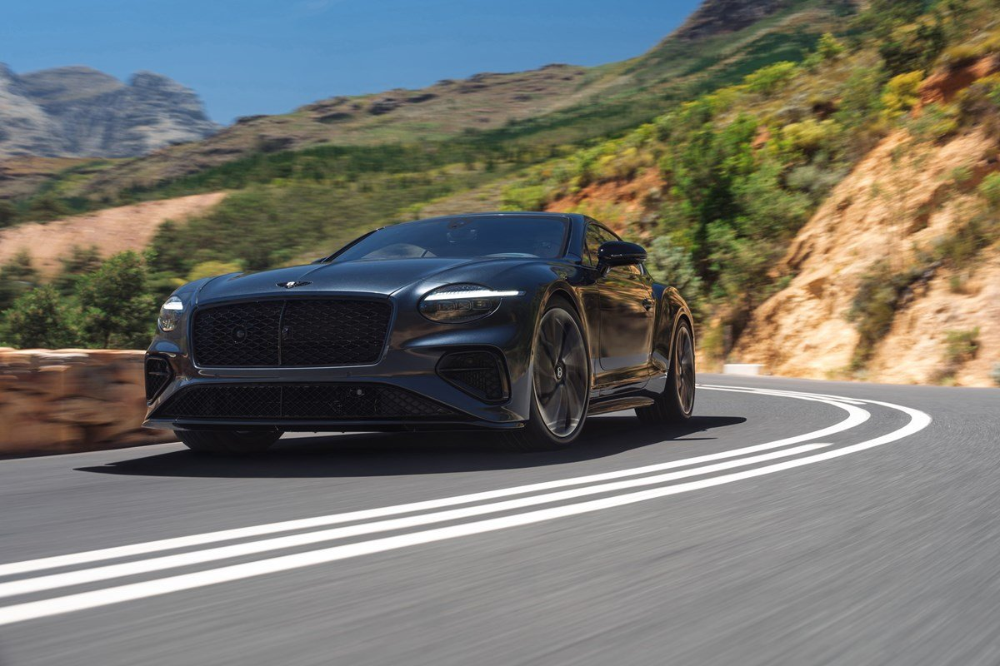
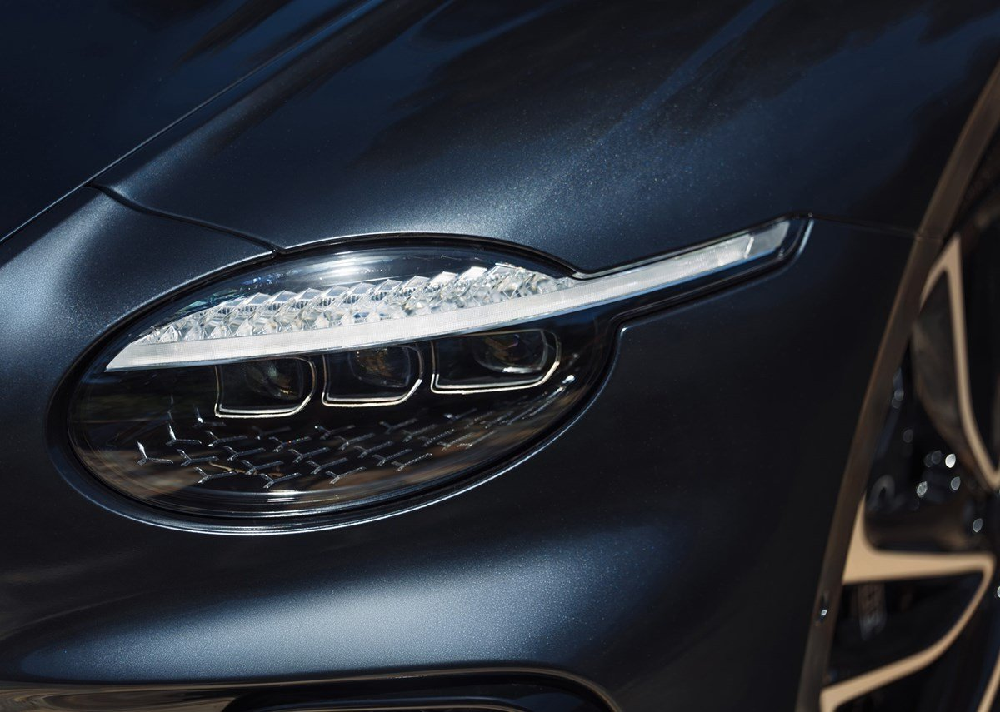
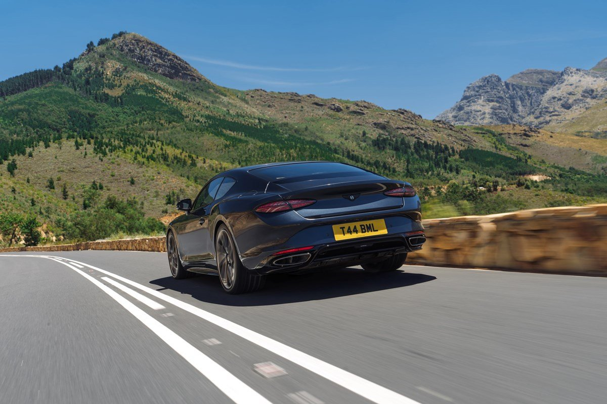
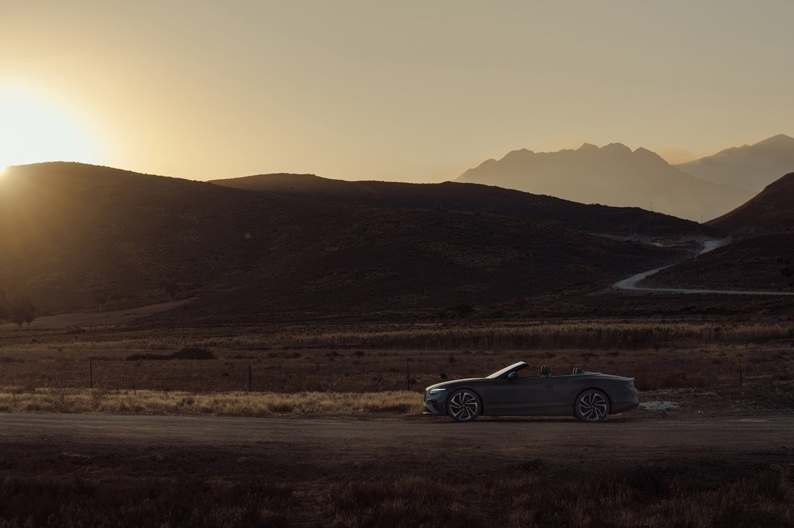

▲ 벤틀리모터스코리아가 국내 출시한 더 뉴 컨티넨탈 GT S ⓒ 벤틀리 모터스 공식
벤틀리모터스코리아가 더 뉴 컨티넨탈 GT S와 더 뉴 컨티넨탈 GTC S를 지난 6월 19일 국내 공식 출시했습니다. 한정판 모델 '슈퍼스포츠'에서 영감을 받아 만들어진 이번 S 라인업은, 벤틀리 스스로 "역대 S 모델 중 가장 강력하다"고 소개할 만큼 성능에 방점을 찍은 고성능 스페셜티 모델입니다.
국내 판매 가격은 더 뉴 컨티넨탈 GT S가 3억 6,850만 원부터, 컨버터블인 더 뉴 컨티넨탈 GTC S는 4억 480만 원부터 시작합니다(부가세 포함, 옵션에 따라 변동). 이로써 컨티넨탈 GT 라인업은 뮬리너, 아주르에 이어 S까지 더해지며 한층 넓은 선택지를 갖추게 됐습니다.
1. 680마력 하이 퍼포먼스 하이브리드 — 역대 가장 강력한 S

▲ 굽이진 산길에서도 안정적인 코너링을 보여주는 더 뉴 컨티넨탈 GT S ⓒ 벤틀리 모터스 공식
더 뉴 컨티넨탈 GT S·GTC S의 심장은 '하이 퍼포먼스 하이브리드' 시스템입니다. 4.0L 트윈터보 V8 엔진(단독 512마력)에 전기모터를 결합해 시스템 최고출력 680마력(PS), 최대토크 94.8kg·m를 발휘하며, 이는 이전 세대 대비 무려 130마력이나 늘어난 수치입니다.
정지 상태에서 시속 100km까지는 GT S가 3.5초, 컨버터블인 GTC S가 3.7초 만에 주파합니다. 최고속도 역시 GT S 306km/h, GTC S 270km/h에 달해 '역대 S 모델 중 가장 강력하다'는 벤틀리의 자평이 과장이 아님을 보여줍니다. 순수 전기 모드만으로는 WLTP 기준 최대 80km까지 주행이 가능해, 평상시 정숙한 이동과 폭발적인 가속을 모두 아우르는 것이 특징입니다.
2. 블랙라인 스펙 — 어두워진 디테일, 짙어진 존재감

▲ 다크 틴트 풀 LED 매트릭스 헤드램프와 정교하게 가공된 알로이 휠 디테일 ⓒ 벤틀리 모터스 공식
외관에는 블랙라인 스펙(Blackline Specification)이 기본 적용됩니다. 글로스 블랙 매트릭스 그릴과 검은색 벤틀리 윙 엠블럼·레터링, 벨루가 블랙 미러 캡, 사이드 실 익스텐션, 리어 디퓨저가 더해져 짙고 스포티한 존재감을 완성합니다. 스피드 라인업과 동일한 다크 틴트 풀 LED 매트릭스 헤드램프, 다크 틴트 테일램프도 눈에 띕니다.
휠은 실버 컬러 10스포크 알로이가 기본이며, 가공 처리된 글로스 블랙 휠과 풀 글로스 블랙 휠도 옵션으로 고를 수 있습니다. 차별화된 사운드를 내는 스포츠 배기 시스템이 기본 탑재돼, 컴포트·벤틀리 모드에서는 절제된 배기음을, 스포츠 모드에서는 한층 강렬하고 폭발적인 사운드를 들려줍니다.
3. 섀시 기술과 인테리어 — 퍼포먼스에 집중한 디테일

▲ 전용 테일파이프가 적용된 스포츠 배기 시스템과 다크 틴트 테일램프 ⓒ 벤틀리 모터스 공식
섀시에는 벤틀리 퍼포먼스 액티브 섀시가 적용됩니다. 역대 S 모델 최초로 전자제어식 올 휠 스티어링과 전자식 리미티드 슬립 디퍼렌셜(eLSD)을 갖췄고, 액티브 올 휠 드라이브와 트윈 밸브 댐퍼, 토크 벡터링, 48V 벤틀리 다이내믹 라이드 액티브 안티롤 시스템까지 더해져 고성능 주행에 걸맞은 접지력과 코너링 성능을 확보했습니다.
실내는 S 모델만을 위한 플루티드 시트와 투 톤 스플릿 디자인으로 퍼포먼스에 집중된 분위기를 연출합니다. 스티어링 휠과 변속 레버, 시트, 도어 인서트에는 부드러운 디나미카(Dinamica) 소재가 적용되고, 피아노 블랙 베니어가 기본 제공됩니다. 고광택 카본파이버 베니어, 풀 레더 마감, 다크 틴트 크롬 금속 장식 등 다양한 개인화 옵션도 준비돼 있습니다.
4. GTC S 컨버터블 — 오픈 에어의 즐거움까지

▲ 노을 진 산길을 달리는 더 뉴 컨티넨탈 GTC S 컨버터블 ⓒ 벤틀리 모터스 공식
쿠페인 GT S와 기본기를 공유하는 GTC S는 소프트톱 컨버터블 특유의 개방감이 강점입니다. 차체 강성 보강과 무게 증가로 가속과 최고속도는 쿠페보다 소폭 낮지만(0-100km/h 3.7초, 최고속도 270km/h), 680마력 하이브리드 파워트레인과 블랙라인 스펙, 벤틀리 퍼포먼스 액티브 섀시는 동일하게 누릴 수 있습니다.
완전변경급 신차는 아니지만, 130마력이나 늘어난 출력과 역대 최초의 올 휠 스티어링·eLSD 조합, 짙어진 블랙라인 디자인까지 더해지며 컨티넨탈 GT 라인업의 정점을 새로 썼습니다. 3억 원 후반에서 4억 원대라는 가격표는 여전히 진입 장벽이 높지만, 그랜드 투어러의 안락함과 슈퍼카급 가속을 동시에 원하는 소비자에게는 매력적인 선택지가 될 전망입니다.